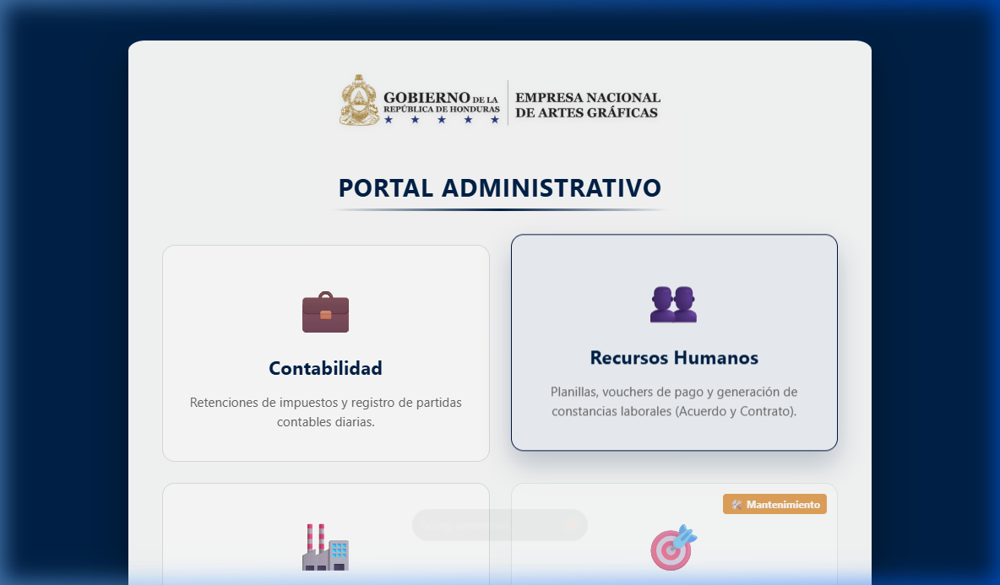
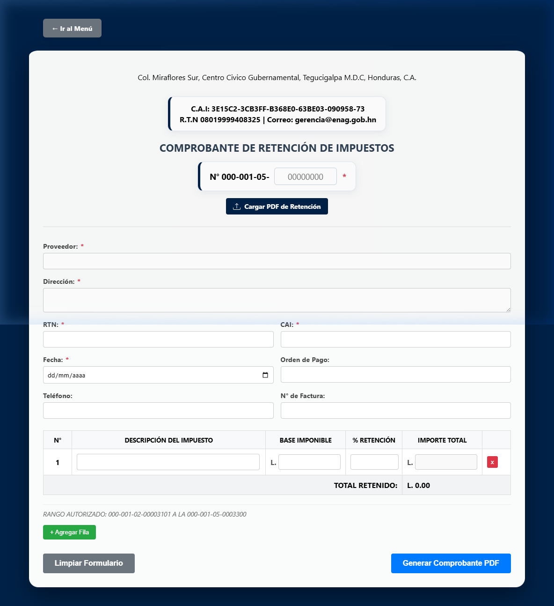
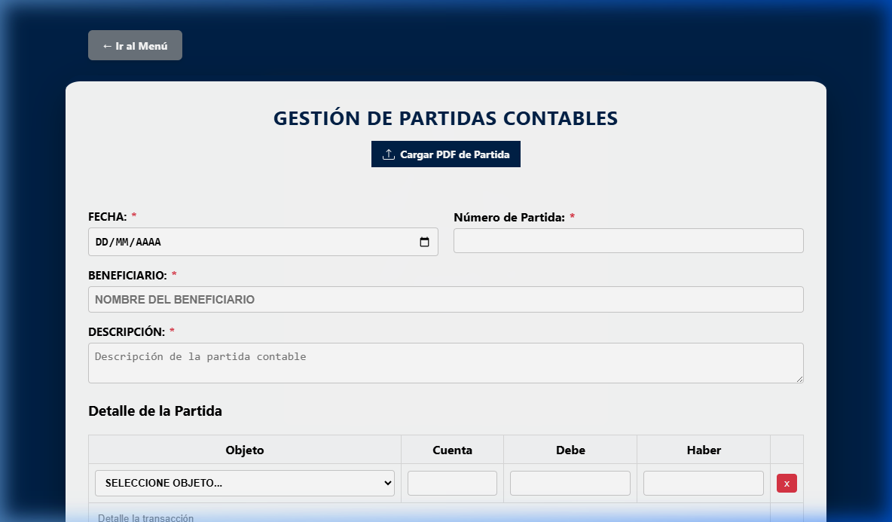
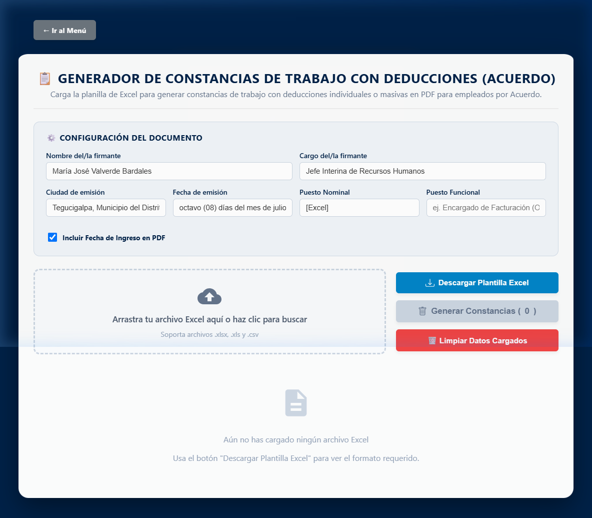
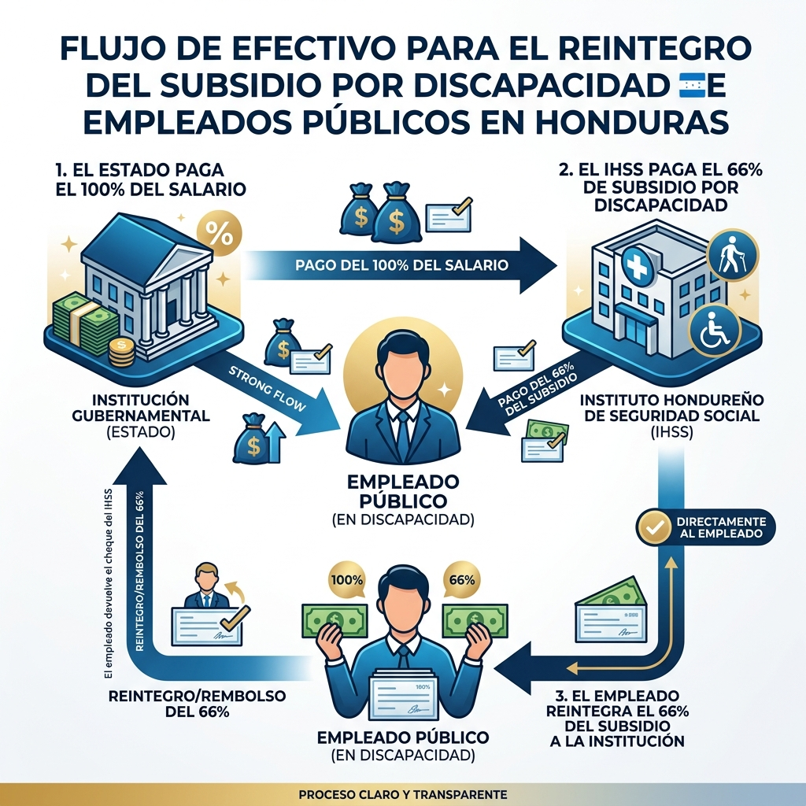
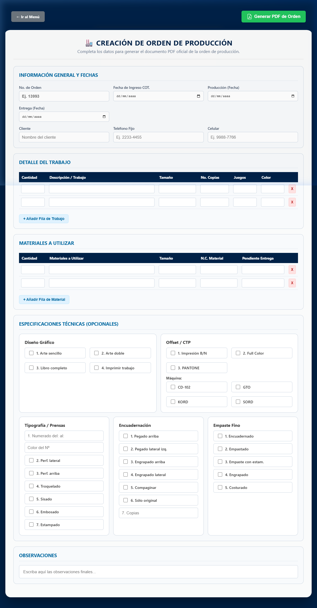

El Sistema de Gestión de la Empresa Nacional de Artes Gráficas (ENAG) es la plataforma corporativa centralizada que automatiza, regula y audita los procesos operativos de Contabilidad, Comercialización, Recursos Humanos, Talleres Gráficos, Bienes Nacionales y Tecnologías de la Información.
1.1. Arquitectura de Autenticación
El acceso a la plataforma está protegido mediante Firebase Authentication con estándares estrictos de la administración pública:
Inicio de Sesión (login.html): Se realiza mediante correo electrónico institucional y contraseña encriptada.
Verificación Obligatoria de Correo: No se permite la interacción operativa si el correo institucional no ha sido autenticado por enlace de verificación.
Control de Sesión Única Anticoncurrente: La plataforma impide inicios de sesión simultáneos en equipos distintos con el mismo usuario. Si un funcionario ingresa en otra estación de trabajo, la sesión previa se cierra de inmediato salvaguardando la integridad de los datos.
Restablecimiento Remoto de Contraseña: El operador puede solicitar un enlace seguro de restablecimiento que llegará a su buzón institucional.
1.2. Claves de Seguridad Departamental y PINes Rápidos
En el portal principal (index.html), ciertas áreas delicadas cuentan con una doble capa de protección mediante contraseña departamental:
Área Funcional
Módulos Protegidos
Clave Departamental Oficial
Contabilidad y Finanzas
Retenciones, Partidas de Diario, Partidas al Crédito, Bienes
Cotizaciones, Detector de Espacio, Órdenes de Producción
Acceso directo a personal autorizado
Tecnología (TI)
Bitácora Global, Parámetros del Sistema, Reportes Técnicos
Clave Administrativa asignada a TI

Figura 1: Tablero central del Portal Administrativo con acceso por áreas departamentales.
⚠️ Regla de Oro de Seguridad Institucional:
Nunca comparta su usuario ni contraseña. Cada acción realizada en la plataforma queda asentada con su firma digital en la Bitácora de Auditoría. Al culminar su jornada, presione siempre el botón rojo "🚪 Cerrar Sesión".
2. Contabilidad — Comprobantes de Retención de Impuestos (SAR)
Módulo oficial (comprobante_retencion.html) para dar estricto cumplimiento al Decreto 17-2010 y regulaciones tributarias del Servicio de Administración de Rentas (SAR) en compras y contrataciones del Estado.
2.1. Procedimiento de Emisión
Datos del Proveedor: Digite el Nombre o Razón Social del proveedor y su Registro Tributario Nacional (RTN). El sistema aplica automáticamente la máscara formal de 14 dígitos (XXXX-XXXX-XXXXXX).
Datos de la Factura: Ingrese el número correlativo fiscal de la factura (formato SAR 000-001-01-XXXXXXXX) y el Código de Autorización de Impresión (CAI) de 32 caracteres alfanuméricos.
Monto Bruto: Digite el importe total de la factura antes de retenciones en Lempiras (L.).
Tasa Aplicable: Seleccione la alícuota tributaria de ley:
1% (Compras de Bienes y Suministros): Aplicable a toda adquisición de papelería, repuestos, consumibles y materiales varios según normativa fiscal del sector público.
12.5% (Honorarios Profesionales): Aplicable a consultorías, peritajes y servicios profesionales técnicos sin subordinación laboral.
Cálculo Automático: El sistema desglosa instantáneamente la Base Imponible, el Valor Retenido SAR y el Valor Neto a Pagar mediante cheque o transferencia BCH.
Descarga de Comprobante PDF: Presione el botón "📄 Generar Comprobante Oficial PDF" para compilar el documento en formato legal con las firmas del Contador General y Auditor Interno.

Figura 2: Formulario oficial para emisión y cálculo de comprobantes de retención tributaria SAR.
💡 Consejo Contable:
Todos los comprobantes generados quedan almacenados en la base de datos de Contabilidad y pueden reimprimirse en cualquier momento buscando por RTN o número de correlativo.
3. Contabilidad — Partidas Contables de Diario y Cuadre
El módulo partidas.html permite registrar los asientos diarios de las operaciones económicas de la ENAG, garantizando de manera inquebrantable el principio contable de la Partida Doble de acuerdo a las Normas Internacionales de Contabilidad del Sector Público (NICSP).
3.1. Validación de Cuadre Estricto (Debe = Haber)
El sistema cuenta con un motor matemático de balance en tiempo real:
📐 Ecuación Fundamental del Balance Contable:
La suma total de importes registrados en el Debe debe coincidir exactamente con la suma del Haber.
Si existe la más mínima diferencia, el sistema mostrará una barra de advertencia roja y bloqueará el botón de guardado para salvaguardar la contabilidad institucional.
3.2. Paso a Paso para Asentar una Partida
Indique la Fecha del Asiento y el número correlativo de partida (sugerido por el sistema).
Escriba la Sinopsis o Concepto General detallando con claridad la operación financiera que se asienta.
En la tabla de cuentas, agregue tantas filas como sean necesarias utilizando el botón "+ Agregar Cuenta".
Para cada renglón, seleccione el Código y Nombre de la Cuenta del catálogo contable, e ingrese el valor en la columna Debe o Haber según corresponda.
Verifique que el indicador de cuadre muestre "✅ Balance Cuadrado (Diferencia: L. 0.00)".
Presione "💾 Guardar Partida" y luego "📄 Descargar Comprobante de Diario" para emitir el folio contable con las 4 líneas de firma reglamentarias: Elaboró, Revisó, Autorizó y Contabilizó.

Figura 3: Interfaz de registro de partidas con validador dinámico de cuadre contable.
4. Contabilidad — Facturas al Crédito y Cuentas BCH
El módulo partidas_credito.html está diseñado para documentar las compras a plazos y facturas de proveedores al crédito que se liquidan a través de la cuenta pagadora del Banco Central de Honduras (BCH).
4.1. Características del Módulo
Control de Cuentas por Pagar: Vincula automáticamente el pasivo con la cuenta institucional de proveedores del Estado.
Datos de Compra Estatal: Registra Número de Factura, CAI, Orden de Compra/Servicio y fecha de vencimiento del crédito para control de mora.
Retención Integrada: Aplica simultáneamente la retención del 1% o 12.5% sobre la compra, reflejando el pasivo neto exacto a liquidar en tesorería.
Emisión de Partida Especial en PDF: Incorpora la referencia del cheque o transferencia bancaria del BCH para conciliación contable.
5. Comercialización — Cotizaciones Oficiales y La Gaceta
El módulo cotizaciones.html es el instrumento de comercialización para presupuestar publicaciones en el Diario Oficial La Gaceta y trabajos gráficos de imprenta conforme a las tarifas establecidas en el Acuerdo Ejecutivo N° 249-2010.
5.1. Estructura de la Cotización
Datos del Cliente: Ingrese el Nombre o Razón Social, RTN, persona de contacto, correo y teléfono.
Renglones de Publicación o Gráficos: Presione "+ Agregar Concepto" para añadir ítems predefinidos (avisos, marcas, patentes, edictos, decretos) o conceptos personalizados para tirajes de imprenta (libros, trifolios, revistas).
Medidas y Cantidades: Especifique las pulgadas/columnas, fracciones de página de La Gaceta o unidades solicitadas.
Descuentos de Ley: El sistema permite aplicar los beneficios tributarios legislados:
Tercera Edad (25%): Para ciudadanos amparados en la Ley del Adulto Mayor.
Municipalidades / Mancomunidades (60%): Descuento oficial a gobiernos locales.
Asociaciones de Desarrollo (40%): Entidades comunitarias reconocidas.
Fundaciones y ONGs (30%): Organizaciones sin fines de lucro con personería jurídica.
Personalizado: Porcentaje especial sujeto a autorización expresa de Gerencia.
Impuesto Sobre Ventas (ISV 15%): Se calcula automáticamente a menos que se marque la casilla "Exento de ISV" (válido únicamente para instituciones gubernamentales con constancia oficial).
5.2. Estados y Seguimiento de Cotizaciones
El módulo incluye un panel de seguimiento para gestionar el ciclo de venta:
⏳ Pendiente: Emitida a la espera de aprobación del cliente.
✅ Aprobada: Confirmada por el cliente; lista para pasar a caja y generar la orden de producción.
❌ Rechazada: Cancelada o descartada por el cliente.
Figura 4: Formulario de cotizaciones oficiales con desglose de conceptos y descuentos de ley.
6. Comercialización — Detector de Espacio y Tarifas (La Gaceta)
El módulo detector_espacio.html resuelve de forma computarizada el cálculo del espacio exacto que un documento o aviso legal ocupará en el formato tabloide oficial de La Gaceta, eliminando discrepancias en el cobro a usuarios y dependencias estatales.
6.1. Métodos de Análisis
Pegado de Texto Directo: Pegue el texto del aviso legal. El algoritmo analiza el conteo de palabras, caracteres y densidad de párrafos, simulando su diagramación a 3 columnas reglamentarias con interlineado de imprenta.
Carga de Documento PDF: El sistema procesa el archivo PDF mediante PDF.js a alta resolución (2.0x DPI) y ejecuta un escaneo por filas de píxeles para detectar márgenes reales y áreas de texto útil.
6.2. Fracciones Normalizadas y Tarifas
Fracción de Página
Ocupación Aproximada
Uso Típico en La Gaceta
1/8 de Página
Hasta 12-15 líneas en 1 columna
Avisos de reposición de títulos, edictos cortos.
1/4 de Página
Hasta 1 columna completa o 1/2 en 2 cols
Avisos de marcas de fábrica, citaciones judiciales.
1/3 de Página
1 columna entera de pliego tabloide
Patentes, licencias ambientales, acuerdos breves.
1/2 Página
Mitad del pliego tabloide
Estados financieros compactos, licitaciones públicas.
3/4 de Página
Mayoría de la plana tabloide
Balances generales de bancos, reglamentos medianos.
Página Completa
Plana entera a 3 columnas
Decretos del Congreso Nacional, leyes de la República.
💡 Enlace Inmediato con Cotizaciones:
Al concluir la medición en el detector, presione el botón "📋 Trasladar a Cotizaciones" para que la fracción determinada y su precio se exporten automáticamente al módulo de cotizaciones oficiales.
7. Recursos Humanos — Vouchers de Pago (Acuerdo y Contrato)
Herramienta para el procesamiento de planillas mensuales y emisión masiva de recibos de pago salarial para empleados bajo modalidad de Acuerdo (vouchers.html) y Contrato (vouchers_contrato.html).
7.1. Procedimiento de Carga y Generación
Seleccione el mes y año contable de la nómina.
Cargue el archivo Excel oficial de la planilla (.xlsx o .xls).
El sistema extraerá automáticamente a todo el personal: Código, Nombre, Identidad, Sueldo Base, Horas Extras, Bonos, Deducciones de Ley (IHSS, Jubilación), Cooperativas y Salario Neto.
Utilice el buscador en pantalla para revisar el recibo preliminar de cualquier funcionario.
Presione "🖨️ Generar Vouchers en Lote (PDF)" para emitir un documento consolidado listo para impresión y firma física.
Figura 5: Carga y verificación de planillas para emisión de recibos individuales de pago.
8. Recursos Humanos — Reporte Resumen de Planilla y Deducciones
El módulo reporte_planilla.html genera un informe ejecutivo y financiero consolidado a partir de la planilla procesada, diseñado específicamente para la Gerencia General, Subgerencia Administrativa y Auditoría Interna.
8.1. Métricas Consolidadas del Reporte
Monto Total Bruto Pagado: Sumatoria global de salarios nominales devengados en el mes.
Total Global de Deducciones: Suma de todas las retenciones efectuadas en la planilla.
Monto Neto Líquido Desembolsado: Importe final transferido a las cuentas bancarias de los empleados.
8.2. Desglose Analítico por Concepto de Deducción
El sistema desagrega cada deducción individualmente con el número de colaboradores afectados y el total recaudado:
Deducciones Obligatorias: Seguro Social (IHSS - Régimen de Salud y Pensiones), Impuesto Sobre la Renta (ISR) y aportes jubilatorios.
Deducciones Institucionales: Cooperativas de empleados, fondos de ahorro y aportes sindicales.
Deducciones de Terceros y Judiciales: Préstamos bancarios y órdenes judiciales por pensiones alimenticias.
Permite exportar este análisis a Excel y descargar el informe formal en PDF ejecutivo con cuadros estadísticos.
9. Recursos Humanos — Constancias Laborales con Código QR
Genera certificaciones de trabajo oficiales en 4 variantes institucionales con Código QR de Validación que permite a bancos, consulados y juzgados verificar la autenticidad del documento en tiempo real.
9.1. Las Cuatro Variantes Institucionales
Variante
Población Objetivo
Uso Principal
Con Deducciones (Acuerdo)
Empleados permanentes
Solicitud de préstamos bancarios, hipotecas y cooperativas.
Con Deducciones (Contrato)
Empleados por contrato temporal
Apertura de créditos comerciales y préstamos personales.
Sin Deducciones (Acuerdo)
Empleados permanentes
Trámites consulares (visas), becas de estudio y constancia laboral simple.
Sin Deducciones (Contrato)
Empleados por contrato temporal
Acreditación de experiencia profesional y trámites de pasaporte.
9.2. Mecanismo de Seguridad con Código QR
Al generar la constancia, el sistema inserta un Código QR único en el pie de página. Cuando un oficial bancario escanea el QR con la cámara de su teléfono móvil, accede a una página cifrada que valida:
Nombre completo e Identidad del colaborador.
Puesto oficial y fecha de ingreso a la ENAG.
Sueldo nominal devengado y firma de la Jefatura de Recursos Humanos.

Figura 6: Generador de constancias laborales oficiales con QR de validación institucional.
10. Recursos Humanos — Subsidios por Incapacidad IHSS y Reintegro
El módulo incapacidades.html calcula el monto exacto del subsidio en efectivo otorgado por el Instituto Hondureño de Seguridad Social (IHSS) y el flujo reglamentario de reintegro de fondos a favor de la ENAG.
10.1. El Principio de Reintegro en el Sector Público
📌 Fundamento Legal del Reintegro Institucional:
En el sector público hondureño, el colaborador incapacitado continúa percibiendo el 100% de su sueldo nominal completo en la planilla ordinaria de la ENAG durante su reposo. Por tanto, el subsidio dinerario que otorga el IHSS (equivalente al 66% de la base reglamentaria) le pertenece a la institución para reembolsar el gasto estatal ya erogado.
10.2. Metodología de Liquidación Matemática
Sumatoria de Días Reales: Se suman los días calendario reales de los 3 meses previos al inicio de la incapacidad.
Sueldo Diario de Referencia: Se toma el Techo de Cotización vigente (L. 11,903.13), se multiplica por 3 y se divide entre la sumatoria de días reales del período de 3 meses.
Subsidio IHSS (66%): Monto a favor de la ENAG que el empleado debe reintegrar formalmente.
Aporte Patrono (34%): Aporte complementario cubierto por la institución.
Carencia: En enfermedad común, el patrono cubre los 3 primeros días al 100% y el subsidio IHSS opera desde el 4.° día. En maternidad o riesgos laborales no aplica carencia.

Figura 7: Diagrama de flujo de fondos y proceso de reintegro de subsidios IHSS en la ENAG.
11. Recursos Humanos — Permisos Laborales y Vacaciones
Administración digital de licencias justificadas, permisos especiales y control del saldo de vacaciones anuales.
11.1. Formato Único de Solicitud de Personal (rrhh_permisos.html)
Sustituye la boleta física tradicional por un formulario digital institucional con flujo de visto bueno:
Tipos de Permiso: Asuntos médicos (con cita o incapacidad anexa), Duelo / Calamidad doméstica, Asuntos personales justificados, Capacitación oficial, Maternidad/Paternidad o Compensación de horas extraordinarias.
Cómputo: Permite ingresar el permiso por horas o por días hábiles completos.
Flujo de Autorización:
El empleado o departamento ingresa la solicitud. Estado inicial: ⏳ Pendiente.
La Jefatura Inmediata revisa y emite su dictamen.
Recursos Humanos valida el cumplimiento de la Ley de Servicio Civil y aprueba: ✅ Aprobado o rechaza: ❌ Rechazado.
Genera el comprobante de visto bueno en PDF para el archivo del expediente del colaborador.
11.2. Control de Vacaciones (vacaciones.html)
Lleva el registro del saldo de días disponibles de acuerdo a los años de servicio según el Código de Trabajo y la Ley de Servicio Civil:
Antigüedad Laboral
Días Hábiles de Vacaciones por Año
De 1 a 5 años de servicio continuo
10 días laborables
De 6 a 10 años de servicio continuo
12 días laborables
De 11 a 15 años de servicio continuo
15 días laborables
De 16 años en adelante
20 días laborables
12. Recursos Humanos — Avisos y Comunicados Institucionales
Panel interactivo ubicado en la pantalla principal de Recursos Humanos del portal (index.html) para comunicar circulares, fechas límite, campañas de salud y avisos de interés general en tiempo real.
12.1. Tipos de Comunicados y Código de Color
📢 General (Azul): Información operativa rutinaria y avisos administrativos.
⚠️ Importante (Ámbar): Vencimientos de plazos para entrega de facturas, deducciones o reportes.
🛠️ Mantenimiento (Naranja): Avisos de interrupciones de energía, mantenimiento de servidores o planta gráfica.
📣 Comunicado Oficial (Verde): Resoluciones de Gerencia, asuetos oficiales y feriados nacionales decretados por el Gobierno.
12.2. Procedimiento para Publicar un Aviso
En la sección de Recursos Humanos, presione el botón "✍️ Publicar Nuevo Aviso".
Ingrese el Título, seleccione la Categoría y el Departamento Emisor.
Escriba el cuerpo del mensaje.
Presione "Publicar Aviso". El mensaje se difundirá instantáneamente a todas las pantallas de los usuarios sin necesidad de recargar la página gracias a la sincronización en tiempo real de Cloud Firestore.
13. Módulo de Producción Gráfica y Talleres
El módulo orden_produccion.html coordina y fiscaliza el flujo industrial en las naves de imprenta, pre-prensa, prensas rotativas, prensas planas y talleres de encuadernación de la ENAG.
13.1. Emisión de la Orden de Producción
Identificación: Número correlativo de orden, Cliente (Secretaría de Estado, institución desconcentrada o cliente privado) y Título de la obra o trabajo gráfico.
Especificaciones Técnicas:
Tiraje: Número total de ejemplares a imprimir.
Formato y Papel: Dimensiones del pliego (Carta, Oficio, Tabloide, Especial), tipo de sustrato (Bond 20 lbs, Papel Periódico, Couché brillante/mate, Cartulina Bristol) y gramaje.
Tintas: Esquema de color (1x0 negro, 2x0 dos tintas directas, 4x4 selección de color Full Color).
Acabados y Encuadernación: Doblez, grapado a caballo, pegado rústico (Hot-Melt), perforado, costura de hilo, barniz UV o laminado plástico.
Asignación: Maquinista o jefe de taller a cargo y fecha comprometida de entrega.
13.2. Fases de Producción en Planta
Permite rastrear cada lote por las distintas etapas de manufactura:
1. Pre-Prensa: Aprobación de pruebas de galera, diseño final y filmación de placas térmicas CTP.
2. Prensa / Impresión: Montaje en máquinas impresoras (Heidelberg, Solna, Rotativa) y tiraje en curso.
3. Post-Prensa / Acabados: Guillotinado, plegado, encuadernación y empaque retractilado.
4. Listo para Entrega / Entregado: Verificación de control de calidad y despacho final con acta de entrega.

Figura 8: Formulario y hoja de ruta técnica de Órdenes de Producción en Talleres Gráficos.
14. Módulo de Bienes Nacionales e Inventario QR
El módulo bienes_nacionales.html administra, geolocaliza y fiscaliza los activos fijos y bienes muebles del Estado asignados a la ENAG, conforme a la normativa de la Dirección General de Bienes Nacionales y el Tribunal Superior de Cuentas (TSC).
14.1. Ficha Técnica Completa del Activo
Cada bien registrado en el inventario contiene:
Código de Inventario: Número patrimonial oficial único (ej. 4004004).
Clasificación Presupuestaria: Equipo de Cómputo y Periféricos, Mobiliario y Enseres de Oficina, Maquinaria Gráfica Pesada, Vehículos del Estado.
Descripción Física: Denominación formal, Marca, Modelo exacto, Número de Serie de fábrica y Color.
Información Financiera: Valor de adquisición en Lempiras (L.), Proveedor y Factura de compra.
Custodio Responsable: Nombre completo del funcionario custodio, cargo, departamento asignado y ubicación física en edificio o planta.
Estado de Conservación: Excelente, Bueno, Regular, Malo o Para Descargo.
14.2. Impresión de Etiquetas con Códigos QR y Códigos de Barra
El sistema genera etiquetas oficiales listas para adhesivo térmico:
Código QR Dinámico: Al ser escaneado con la cámara de cualquier teléfono móvil o tablet, abre la pantalla pública consulta_bien.html mostrando la ficha íntegra del bien, custodio y estado sin requerir contraseña.
Código de Barras CODE128: Generado para pistolas láser estándar durante levantamientos de inventario físico anual.
14.3. Documentación Oficial y Descargo
Ficha de Resguardo / Asignación: Acta formal que firma el empleado al asumir la custodia legal del equipo.
Acta de Descargo: Instrumento para gestionar la baja patrimonial de bienes dañados u obsoletos, sustentada en el Reporte Técnico del Departamento de Informática.
Exportación a Excel: Genera la matriz consolidada para auditorías del Tribunal Superior de Cuentas.
15. Módulo de Emisión de Memorándums Oficiales
El módulo memorandums.html es la herramienta para la redacción protocolaria, numeración correlativa automatizada y despacho de comunicaciones formales dentro y fuera de la ENAG.
15.1. Correlativo Ministerial Automatizado
El sistema administra el correlativo dinámicamente en Cloud Firestore por área de procedencia:
Numeración Secuencial: El sistema sugiere el siguiente número en secuencia (actualmente en el correlativo 59: INFO-59-ENAG) y permite edición manual en caso de autorizaciones especiales.
Sufijo Institucional: Termina en ENAG garantizando la estandarización ministerial.
15.2. Control de Tipografía y Ajuste en 1 Sola Página
Para evitar que el memorando se desborde a una segunda página o corte el membrete superior del Gobierno o el pie de página institucional (www.enag.gob.hn), el sistema cuenta con:
Tipografía Oficial:Times New Roman en todo el documento.
Selector de Tamaño de Letra:
Pequeña (8.5 pt) [Predeterminada]: Configuración recomendada para la gran mayoría de memorándums, garantizando la visibilidad completa del membrete y pie azul.
Muy Pequeña (7.5 pt): Para memorandos extensos con tablas o listas detalladas.
Mediana (9.5 pt): Para notas breves de 1 o 2 párrafos.
15.3. Redacción y Emisión
Indique Destinatario (PARA), Remitente (DE), ASUNTO y Tratamiento de Cortesía (con botón de sugerencia rápida ⚡).
Escriba el cuerpo del memorándum. Puede insertar viñetas organizadas y texto de cierre con un solo clic.
Seleccione el formato de despedida: Normal (con firma y sello), Compacto o Solo Texto.
Indique las dependencias que recibirán copias de cortesía (c.c.).
Presione "📄 Descargar PDF Oficial" para emitir el archivo en alta definición o "🖨️ Imprimir" para enviarlo directo a su impresora.
16. Reportes Técnicos — Departamento de Informática
El módulo reporte_tecnico.html estandariza los dictámenes periciales y de soporte emitidos por el personal de Tecnologías de la Información. Es el instrumento oficial requerido para justificar reparaciones, compras de repuestos o solicitudes de descargo de activos tecnológicos ante Bienes Nacionales.
16.1. Correlativo Oficial Anual
La numeración inicia oficialmente en RT 2026-11. El sistema permite alternar entre el formato ministerial con prefijo (RT 2026-11) o formato numérico puro (2026-11), manteniendo la persistencia en la base de datos.
16.2. Enlace Inteligente con Bienes Nacionales
El botón "🔍 Buscar en Bienes Nacionales" conecta de forma bidireccional ambos módulos. Al ingresar la Serie o el Número de Inventario del equipo y presionar el botón, el sistema completa automáticamente:
Responsable del Bien: Nombre del custodio oficial asignado.
Departamento: Unidad interna a la que pertenece el bien.
Descripción del Equipo: Denominación, Marca, Modelo y Color.
Serie No. e Inventario No.: Identificadores oficiales validados.
16.3. Diagnóstico y Dictamen Técnico
El especialista detalla la inspección realizada. Incluye botones rápidos para insertar plantillas:
⚠️ Descargo: Inserta el dictamen de daño irreparable por alto voltaje o término de vida útil, recomendando la baja ante Bienes Nacionales.
✅ Reparado: Acredita el mantenimiento correctivo, reemplazo de componentes y operatividad restablecida.
Línea de Cierre de Seguridad: Inserta automáticamente la línea centrada:
-------------------------------- Ultima Linea --------------------------------
para impedir que se agreguen cláusulas no autorizadas al documento físico.
16.4. Cuadrante de Cuatro Firmas y Copias Oficiales
El documento exige y delimita los espacios en cuadrícula 2x2 para cuatro firmas de ley:
Firma Responsable del Bien: Firma y aceptación del custodio del equipo.
Firma Técnico de Informática: Perito que realizó la revisión física.
V.B. Sub-Gerente Administrativo: Autoridad administrativa que avala el dictamen.
Firma Jefe de Informática: Aprobación técnica de la jefatura departamental.
Al pie del reporte se especifica la distribución de copias: Original: Bienes Nacionales, c.c. Archivo y c.c. Responsable del Bien.
16.5. Navegación Unificada
El módulo cuenta con el botón superior "← Volver al Menú Principal" para un retorno expedito a la consola de inicio.
17. Atención al Ciudadano — Estado de Solicitudes
El módulo estado_solicitud.html permite a usuarios internos y ciudadanos consultar en tiempo real el progreso de cotizaciones, trámites de publicación en La Gaceta o pedidos de artes gráficas ingresando el código de seguimiento correspondiente.
17.1. Flujo de Estados del Trámite
Estado
Significado Operativo
1. Recibido
La solicitud ingresó a ventanilla o buzón y se le asignó correlativo.
2. En Revisión
Comercialización verifica el texto legal, diagramación y tarifa aplicable.
3. Aprobado / Presupuestado
Cotización lista con orden de pago para el cliente.
4. En Taller / Diagramación
El material se encuentra en proceso de impresión o montaje en La Gaceta.
5. Listo / Entregado
Ejemplares impresos listos para retiro o entregados en ventanilla oficial.
18. Auditoría y Bitácora Institucional
El módulo bitacora.html registra de forma cronológica e inmutable todos los eventos críticos ejecutados en el sistema para garantizar la transparencia institucional y auditoría del Tribunal Superior de Cuentas.
18.1. Parámetros Auditados
Identidad del Operador: Nombre de usuario y correo del funcionario que ejecutó la acción.
Módulo de Origen: Contabilidad, Comercialización, RRHH, Bienes Nacionales, Informática, Producción o Sistema.
Acción Efectuada: Creación, edición, eliminación de registros, cuadre de partidas contables, emisión de memorandos o descarga de vouchers.
Fecha y Hora Exacta: Marca de tiempo sincrónica con los servidores seguros de Firebase.
Filtros Avanzados: Búsqueda por rango de fechas, usuario o tipo de operación.
19. Parámetros del Sistema y Soporte TI
Módulo exclusivo para el personal de Tecnologías de la Información (parametros.html):
Configuración del ISV: Permite actualizar la tasa oficial de Impuesto Sobre Ventas en caso de reformas al Código Tributario.
Tiempos de Sesión: Ajuste de la expiración automática por inactividad para resguardo de terminales desatendidas.
Bloqueo de Concurrencia: Activa o desactiva la política de sesión única para todo el personal.
Botón Flotante de Soporte (soporte.js): Herramienta en pantalla que permite a los operadores notificar fallas al departamento de TI con captura de pantalla y descripción del error.